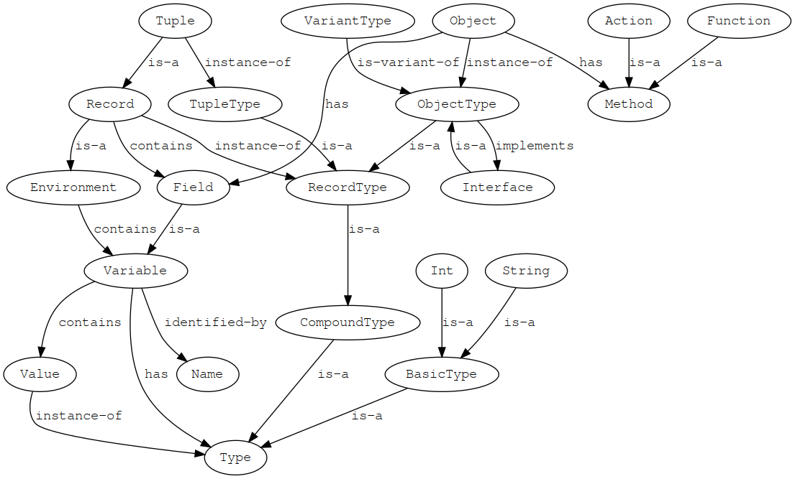

Dok Programming Language v0.1
Table of Contents
- License
- Current status
- Quick tour
- Design philosophy
- Values
- Object Oriented Programming (OOP)
- Functions
- Nested transactions semantic (TR)
- Impure statements
- Attribute grammars (AG)
- Metaprogramming
- Design by contracts and refinement types
- Map-Reduce programming model
- TODO Concurrency
- TODO Knil
- Dok semantic
- Source code documentation
- Editing macro
- DokMelody IDE
- Modules and packages
- Comparison with other languages
- Bibliography
#DATE: 2019-04-23
License
This manual is released under SPDX-License-Identifier: CC-BY-4.0
Copyright (C) 2019 Massimo Zaniboni - mzan@dokmelody.org
Current status
The design of the language is a work in progress and all can change.
There is no compiler or interpreter of the language, so it is all vaporware. I'm publishing this mainly for self-motivation.
Quick tour
Assert {
Assert {
io!println("Hello World!")
s1::= "Hello"
s2::= "World"
io!println(s1 ++ " " ++ s2)
!helloWorld(weather::String) --> {
try {
weather == "sunny"
io!println("Hello World!")
} else {
io!println("Huh")
}
}
!helloWorld("cloudy")
}
Assert {
Int.factorial1 --> Int {
try {
self == 0
1
} else {
self * (self - 1).factorial1
}
}
Int.factorial2 --> Int {
r::= 1
n::= 2
repeat {
while { n <= self }
r:= r * n
n:= n + 1
}
r
}
Int.factorial3 --> Int {
List(Of:Int).range(from: 1, to: self).product
}
4.factorial1 == 4.factorial2 == 4.factorial3
}
Expr(To::Any) --> (
#: This is a new type `Expr` used for representing expressions.
# The param `To` represent the result of the expression evaluation.
/Int(To:Int) --> (x::Int)
# This is `Expr/Int` type variant
# with the `Expr/Int.x` field of type `Int`
/Bool(To:Bool) --> (b::Bool)
/Add(To:Int) --> (x::Expr(Int), y::Expr(Int))
/Mul(To:Int) --> (x:Expr(Int), y:Expr(Int))
/Eq(To:Bool) --> (x:Expr(Int), y:Expr(Int))
eval --> Self.To {
#: A function evaluating an `Expr`
# and returning its result of type `To`.
# It is written in a functional-programming style
# because there is a pattern-matching for every possible
# variant of an expression.
# `@Case` is a metaprogramming macro.
@Case<<self.is(~)>> {
./Int
#:NOTE: the `@Case` macro is expanded to
# `self.is(./Int)` code
self.x
# this is the result of the branch
# if the previous conditions are respected
} else {
./Bool
self.b
} else {
./Add
self.x.eval + self.y.eval
} else {
./Mul
self.x.eval * self.y.eval
} else {
./Eq
self.x.eval == self.y.eval
}
)
e::= Expr/Add(x: ./Int(10), y: ./Int(20))
e.eval == 30
}
Design philosophy
Dok is a data transformation and metaprogramming (i.e. code is data) language.
Dok design follows these guidelines:
- whenever possible values are preferred to references
- nested transaction semantic joins some of the benefit of functional programming (code with a predictable semantic) with imperative programming (convenience of local mutable state)
- every part of a Dok application can be meta-annotated and then manipulated by metaprogramming code
- simple types can be extended with contracts (i.e. logical properties)
- Dok compiler is fully extensible from developers
- advanced features of the language are introduced using metaprogramming compilation rules that are user modifiable
- advanced Dok code is compiled to Dokk that is a kernel version of Dok with a simplified C-like semantic, where the cost of the operations is intuitive
- effects of metaprogramming analysis and transformation rules must be always inspectable from the user using the DokMelody IDE
Dok programs can follow an Aspect Oriented Programming (AOP) approach:
- a complex problem can be partitioned in rather orthogonal aspects
- each aspect can be implemented extending previous code with the details of the aspect, and/or adding meta-annotations, and/or adding compiler plugins that can analyze globally the program and inject functionalities
Dok programs are preferably developed using progressive refinements from high-level code to low-level code:
- high-level code does not contain irrelevant low-level details, and so it is more compact and comprehensible respect complete code with all implementation details
- low-level code can extend or implement parent high-level code specifying the missing low-level details
- high-level code is the specification and low-level code is the implementation
- different low-level implementations of the same high-level specification can be created, for supporting different run-time environments or system constraints (e.g. real-time systems, systems with small data sets that can stay in RAM, systems with big data sets requiring a DBMS, and so on)
Using the same techniques for progressive refinements, Dok programs can support different branches of the same code base, i.e. derive different version of an application from the same code base.
Like Smalltalk, Dok is shipped with a reference IDE (DokMelody), because interaction between the programmer and the programming language is not a secondary aspect. Unlike Smalltalk, generated applications are not obliged to live in the same virtual environment of the IDE, but they can be compiled to different hosting platforms and runtime environments.
Dok syntax guidelines are:
- code must be readable from left to right (e.g.
x.f.g(y)instead ofg (f x) y) - curly braces simplify refactoring of code respect mandatory indentation
- code formatting is under the control of the IDE
Values
Values are expressions that are fully evaluated (i.e. normalized form).
For example 3 is a value of type Int, while 2 + 1 is a n expression that can be further normalized
(simplified) to the value 3.
Values are immutables.
Primitive values
Int, Float, String and so on are primitive values. They can not be further decomposed.
Assert {
3.is(Int)
(3 + 1).is(Int)
(3 + 1) == 4
"three".is(String)
}
Variables
A variable is a name used as unique identifier inside an environment and associated (always inside the environment) to a value. The associated value can be changed, so the name variable.
Dok uses mutable variables like imperative languages but they are associated to values and not references. Doing so there are no reference aliasing problems because the value of a mutable variable depends only from the instructions executed in the same static (lexical) context of the variable, and not from the more complex run-time behaviour.
As in functional-programming languages values are used also for managing complex data structures as containers, and not only for basic values like int or string.
Assert {
r --> Int {
b::= 2
c::= 3
#:NOTE: `b` and `c` are two local mutable variables associated to two values of type `Int`
b + c
#:NOTE: the last line of a code block is its result
}
r == 5
Assert {
x::Int # declare a new variable inside this code block, without specifying a value
x:= 1 # assign a value to the variable
x == 1
x:= x + 1 # change the value
x == 2
y::= x
y == 2
Assert {
x1::Int
#:NOTE: we can not assign again `x` name to this variable
# because it will be a name-clash with the parent variable.
# Dok does not allow this for mantaining clarity of the code.
}
}
# here `x` is not anymore visible (lexical scoping)
}
Records
A record is a compound value: it contains associations between field names and field values. Fields in records are like variables in an environment.
Assert {
x::= (i::= 1, s::= "one")
x.is(Record)
x.i == 1
x.i.is(Int)
x.s.is(String)
x.s == "one"
}
Assert {
P --> (x::Int, y::Int )
# `P` is a type of record with fields of the specified types.
G --> (p::P, l::Int)
# `G` is the type of a record having the field `p` with type `P`
p1::= P(x:= 1, y: 2)
g1::= G(p: p1, l: 3)
# create two record values of type `P` and `G`
g1.p.x == 1 && g1.p.y == 2 && g1.l == 3
# access value of fields
p1.x:= 4
#:NOTE: we are saying this `p1:= P(x: 4, y: 2)`
p1.x == 4 && p1.y == 2
g1.p.x == 1
g1.p.x !== p1.x
#:NOTE: the variable ``g1`` is unchanged because it is associated to the same old value.
# In a traditional object-oriented programming language, ``g1.p`` contains a reference to ``p1``
# and so changing ``p1`` affect also ``g1.p.x``.
}
Assert {
P --> (p::Int)
S --> (s::P)
x::S
x.s.p:= 0
#:NOTE: this is equivalent to `x:= S(s: P(p: 0))`
# because in Dok I have only values and not references
x.s.p == 0
x.s == P(p: 0)
x == S(s: P(p: 0))
x == S(P(0))
#:NOTE: in case of single fields it is possible omitting the names
}
Tuples
A tuple is like a Records, but in which the position of the fields is important, and in some cases the field name can be omitted in favour of the position.
Tuples are used mainly as arguments of functions, because functions can be called without specifying the argument name, e.g. 10.mod(2).
Containers as values (Persistent Data Structures)
Like in functional programming languages, also compound types (e.g. records, containers, etc..) are values.
Containers that are values are called Persistent Data Structures and there are various efficient implementations of them. They allows also efficient rollback of changes in case of Nested transactions semantic (TR).
The semantic of persistent data structures simplifies the reasoning on code behavior because it suffices to see the scope where a container is used, instead of taking in account also aliasing and its global run-time behaviour.
Dok supports also references and in-place mutable containers, but they are rarely used.
This is an usage example:
Assert {
m1::= Map(From: Int, To: Int)
#:NOTE: `Map` is a value in Dok. In this case we are starting from the empty Map.
m1[1]:= 1
#:NOTE: this can be expanded into ``m1:= m1.insert(1, 1)``,
# and it returns a new version of the ``Map`` value and assign it to the mutable variable
m1[2]:= 2
m1[3]:= 3
m2::= m1
#:NOTE: we are copying values, not references, so it is like a clone
# from a semantic point of vie,
# also if internally Dok will use more efficient approarch
m1[2]=4
#:NOTE: this can be expanded into ``m1: m1.insert(2, 4)``
# and return a new version of the `Map` value
m2[2] == 2
#:NOTE: `m2` is not affected by `m1` change because it is still the original value
}
Common containers
Maybe
Assert {
Maybe(Of::Type) --> (
#: A value that can have "no-value".
isNothing --> Bool
isJust --> Bool { not (self.isNothing) }
/Nothing --> (
isNothing -> { True }
}
/Just --> (
just::Of
isNothing --> Bool { False }
)
)
Any --> Maybe(Of::Any) {
#: Automatic conversion to Maybe.
Maybe/Just(self)
}
Maybe(Of::Type) --> Of {
#: Automatic conversion from /Maybe/Just type to wrapped type.
# Fail if it is Nothing
self.isJust
self.just
}
Assert {
x::Maybe(Int)
x:= Maybe/Just(5)
x.just == 5
x.isJust == True
x.isNothing == False
x.is(Maybe)
x.is(Int) #:NOTE: apply inverse conversion
x.just == x.Int == 5
x.just == x #:NOTE: apply automatically conversion to Int
y::= 5
y.is(Int)
y.Maybe.is(Maybe)
y.is(Maybe)
y.isJust
y.just == y == 5
}
# Because `Maybe` is used a lot, the compact form `Any?` can be used instead
Assert {
x::Int?
x.is(Int?)
x.is(Maybe(Int))
x:= 5 #:NOTE: automatic conversion from Int to Maybe(Int)
x.is(Maybe/Just)
x.is(Int)
x.just == 5 == x
}
List
List(Of::Type] --> (
#: List is a container containing a finite sequence of values of the same type
@Abstract
head::Of?
tail::Self
isEmpty --> Bool
get(i::Int) --> Of {
@Abstract
@UseBracketArraySyntax
#:NOTE: list elements can be retrieved with ``someList[pos]``
# where ``pos`` is an `Int` starting from ``0``.
}
!set(i::Int, value::Of) --> Self {
#: The position must be an already filled position
@Abstract
@UseBracketArraySyntax
#:NOTE: support ``someList[0]:= someValue``
}
!append(toTail::Of) --> Self {
#: append an element to tail
@Abstract
}
!append(toTail::Self) --> Self {
#: append another list of exactly the same physical type to tail
@Abstract
@SelectPriority
#:NOTE: favour this respect other functions with similar name defined after this
}
!append(toTail::Container(Of)) --> Self {
#: append another container to tail
@Abstract
}
)
# Because list is used a lot it can use the compact `Any*` form
# and the compact ``(x, y, ...)*`` form
Assert {
x::= Int*
x.is(List(Int))
x.isEmpty
x!append(1)
x!append(2)
x.head == 1
x.head == Just(1)
x.head.just == 1
y::= (3, 4, 5)*
y.is(List(Int))
y[0] == y.head == 3
y[1] == 4
y[10] == Nothing
y[3] == Nothing
y!append(6)
y[3] == 6
y!set(3, 7)
y[3] == 7
y[3]:= 8
y[3] == 8
}
Array
Array(from::Int, to::Int, Of::Type) --> (
#:NOTE: Stores consecutive elements in a (rather) efficient way
@Abstract
get(i::Int) --> Of {
@Abstract
@UseBracketArraySyntax
@Require { i >=Self.from && i < Self.to }
}
!set(i::Int, value::Of) --> Self {
@Abstract
@UseBracketArraySyntax
@Require { i >= Self.from && i < Self.to }
}
)
Assert {
a::Array(from: 1, to: 10, Of: String)
a[0]:= "Zero"
a[1]:= "One"
a[1] == a.get(i)
}
T* T+
T* is the type of a value containing zero or more instances of T type. T+ is like T* but it had to contain at least one instance, i.e. it can not be empty.
In Dok T* concrete type can be something like List(T), Stream(T), Array(T).
Then the compiler can infer the minimal and more efficient data structure to use according the real usage in the code and/or hints of the programmer.
This compact form is used because it simplifies the specification of syntax/grammars.
Object Oriented Programming (OOP)
Dok supports object-oriented-programming (OOP) but trying to unify it with functional-programming (FP) concepts. You can find (more or less) every OOP feature also in Dok, with the main difference that Dok favours objects as values and not as references.
The terms used from Dok are a mix of OOP and FP terms:
- type: identify a domain of values having some common logical or physical (i.e. physical storage format) characteristics.
- value: instance of a type, i.e. a value inside the domain of the type.
- record: a compound value containing fields. It is like an environment, where fields are variables.
- tuple: a record where the position of the fields matters.
- object: like a record, but it can contains also non-mutable methods.
- method: like a field of an object, but it can have arguments and it have some code that is executed for returning the value associated to it.
- function: a method of an object that is referentially transparent (i.e. pure) respect its arguments, the fields and methods of the objects and the variable values of the environment where its object is defined.
- action: a method of an object that can update the fields of the objects or the variables of the lexical context in which it is defined. It can optionally also return a value.
- interface: an object-type with some abstract properties that can be supported from other concrete object-types.
- variant type: given a parent object-type, it can have one or more variant types supporting all the methods of the parent type, overriding some of them, or adding new methods. The variant types unifies the OOP idea of inheritance with the FP idea of sum types with variants.
- inner type: it is a type defined inside the namespace of a parent object-type, and usually defining concepts making sense only related to the owner type. In OOP it is called inner class.
This is a graph for giving an informal idea:

Type variants
Type variants are specified using an hierarchy of variant types (i.e. algebraic sum types) and specifying only the differences respect their parent type. So it is a mix of algebraic data types like in functional programming languages and OOP sub-class.
Type variants must respect the same implicit and explicit contracts of the parent type, because every time a parent type is expected, a specific variant can be sent instead.
Only most specific leaf type variants can be instanced directly, all other parents of the hieararchy are implicitly assumed Abstract.
@Assert {
T --> (
a::Int
# this is a field of the type, and its value can change at run-time
f --> String
# this is a function of the type, and its value can not change at run-time
# It is abstract, and it will be specified for variant types.
HelloWorld --> String { "Hello World!" }
# this is a static function because it starts with an upper case letter,
# and it is associated to `Self` type, instead of `self` object.
/A --> ( f -> String { "T/A" } )
#:NOTE: `T/A` is a type variant of `T`
/B --> ( f -> String { "T/B" } )
#:NOTE: `T/B` is another type variant of `T`
)
}
Overriding
Type variants can override properties and methods of parent type like in normal object-oriented languages. Also types of the methods can be redefined during overriding (see Type conformance).
For making explicit that a field or method is redefined the syntax : and -> is used instead of :: and -->.
In case an overriding method want call the parent method, it can use the syntax self.super(). super is a reserved keyword.
Note that also this is a reserved keyword, and self.this() call the current method.
super is also used for acessing the self field inside a nested lexical scope. See this example:
Assert {
l1::= (1, 2, 3, 4, 5, 6)*
l2::= (8, 10, 50)*
l1.filter({l2.any({ self == super * 2 })}) == (4, 5)*
}
Type references
If there are no name clashes in the types, Dok can use short type names like B instead of /A/B. The rules are:
/Self/T/Gfor referring to some nested internal variant type, starting from the root parent type declaration/SomeType/T/Gfor referring to some nested variant type, of an external typeSomeTypeT/G/H, in this caseTmust be a type without name clash, and so it must identify in an non ambiguos way the starting type chain. You must use this from when for example there is a name clash onGtype nameM.T/G/Hin caseMis a named module, containing the typeT
Type extension
Types can be extended adding new properties, methods and nested variant types to them.
@Assert {
P --> (
p::Int
f --> Int { self.p + 1 }
/T::(
t::Int
)
)
# we can extend `P`
P -> (
q::Int
#:NOTE: we added a new field to the type
g --> Int {
#:NOTE: we added a new function to the type
self.f + self.q
}
/T -> (
#:NOTE: we are extending `P/T` type variant
l::Int
)
/W --> (
#:NOTE: we are adding a new type variant to ``P``
w::String
)
)
}
Type conversion
In Dok it is possible converting between types.
Assert {
CartesianPoint --> (x::Double, y::Double)
PolarPoint --> (distance::Double, angle::Angle)
PolarPoint --> CartesianPoint {
#:NOTE: we are defining the default conversion function.
# Every time a `CartesianPoint` is expected,
# we can use a `PolarPoint` instead,
# because the conversion function can be invoked.
# The compiler whenever possible will avoid to create
# an explicit value of type `PolarPoint` and it will
# apply inline conversions.
r::CartesianPoint
r.x:= self.r * self.angle.cos
r.y:= self.r * self.angle.sin
r
}
CartesianPoint --> PolarPoint {
#:NOTE: we are defining the inverse conversion
r::Cartesian
r.distance:= ((self.x ^ 2) + (self.y ^ 2)).sqrt
r.angle:= (self.x, self.y).atan2
r
}
p1::= PolarPoint(distance: 5, angle: 1)
p1.CartesianPoint.PolarPoint == p1
# we are calling the two conversion functions in sequence,
# and then the same value should be returned.
}
Interfaces
Interfaces are types defining some general concept that can be
supported from many distinct types, e.g. Comparable, Storeable.
They are a powerful abstraction mechanism because a lot of generic code can be written for working with types respecting the contracts of one or more interfaces and then this code can be used for any effective type supporting the interface.
From a certain point of view if values are instances of types (i.e. the type describe the characteristics of the value), then types are instances of interfaces (i.e. the interface describes the characteristic of the type). From another point of view interfaces are like additional types associated to a value. So from the point of view of the value they are a form of multiple inheritance.
Definition
In Dok interfaces are types with the @Abstract annotation.
They can contain default implementations for their functions,
but they can not contain type variants.
Assert {
Comparable --> (
@Abstract
#:NOTE: this annotation says that this is a in Interface,
# so there can not be direct value instances.
# The name `Abstract` is used instead of `Interface`
# because the same name is used also for functions.
compare(with::Self) --> Ordering {
@Abstract
}
x < y --> Bool {
x.compare(y) == Ordering/LT
@Transitive
@Irreflexive
@AntiSymmetric
}
x > y --> Bool {
not (x.compare(y) == Ordering/LT)
@Transitive
@Irreflexive
@AntiSymmetric
}
x == y --> Bool {
x.compare(y) == Ordering/EQ
@Transitive
@Reflexive
@Symmetric
}
x <= y --> Bool {
x < y || x == y
@Transitive
}
x >= y --> Bool {
x > y || x == y
@Transitive
}
)
Interfaces hieararchy
An interface can require that the type supporting it will support also one or more other interfaces.
Semigroup --> (
x .op. y --> Self {
@Abstract
@Associative
}
)
Monoid && Semigroup --> (
Identity --> Self {
@Abstract
@Ensure {
x .op. Self.Identity == x
Self.Identity .op. x == x
}
}
)
Interface instances
A type A implements an interface B through the specification of a conversion from A to B.
Int -> Comparable (
#:NOTE: we are saying that we can convert a value
# of type `Int` to a value of type `Comparable`,
# and that this is the default conversion to apply
# every time a function requiring a `Comparable`
# receives an `Int`.
# So we are saying that `Int` supports/implements interface `Comparable`.
x `compare` y -> Ordering {
x.compareIntBuiltIn(y)
}
)
c1::= Int(5)
c1.is(Int)
c1.is(Comparable)
c1 == c1
c1 == 5
c2::=Int(6)
c1 < c2
Interface constraints
A type constraint can specify one or more interface constraints
T --> (
g(x::Ord && Associative) --> Int { 0 }
#:NOTE: `x` parameter must support these two interfaces
)
} # close the Assert
Type aliases
Dok supports type aliasing using an alternative form of Interface constraints where an effective type (i.e. the aliased type) is extended with a new interface (i.e. the type alias).
An Haskell type alias like type Age = Int in Dok is:
@Assert {
Age && Int --> (
#:NOTE: we are adding a type constraints `Int`, but `Int` is not an interface
# but an effective type, so `Age` is like an interface added to the effective type `Int`.
@Ensure { self >= 0 }
#:NOTE: we can add additional constraints and methods to `Age`
isMajor --> Bool { self >= 18 }
)
x::= Age(16)
x.is(Age)
x.is(Int)
x == 16
x:= x + 2
x == 18
x.isMajor
y::= Int(16)
y.is(Int)
not (y.is(Age))
#:NOTE: every `Age` is an `Int`, but not every `Int` is an `Age`
z::Age
z:= y.Age
#:NOTE: the compiler derived the type conversion
z.is(Age)
z == 16
not (z.isMajor)
}
Properties vs Functions
Properties can be changed at run-time.
On the contrary function declarations can not be changed at run-time, because semantically the function code is part of the contract of the application, and from a practical point of view, a too much dynamic system is slower (the compiler can not apply some optimizations).
Protected properties
Properties starting with _ are used for defining protected properties
that are implementation only. They can be accessed only from functions
of the type, and from types defined in the same module, but not acessed
directly from the external.
Assert {
PE --> (
_x::Int
_y::Int
)
Unnamed properties
Properties with name _ are considered unnamed:
- there can be more than one field with this name
- it can never be referenced explicitely in the code, because
self._does not make sense as call - they are used usually in DSL and metaprogramming code when something has certain properties but it can be ignored because it is never used, for example in parsers for denoting text to parse but discard
Type constructors
Values must be initialized: all properties must be set to an initial value, and type invariant must be respected.
Every type can have special functions, called constructors, for creating and initializing a value.
Assert {
Point --> (
x::Double
y::Double
#:NOTE: this field is declared, but not initialized to a default value.
name::= String
#:NOTE: in this case the field is by default initialized to its default value, the empty string.
!cartesian(x::Double, y::Double) --> Self {
@Constructor
#:NOTE: this is a note both for the user, and for the compiler
#:NOTE: this function can be used both as a constructor, or normal function for setting values
self.x:= x
self.y:= y
#:NOTE: for being a valid creation procedure all not initialized properties must be set to an initial value, otherwise the compiler will signal an error
self
}
!polar(r::Double, t::Real) --> Self {
@Constructor
#: Init the point using polar coordinates.
self.x:= r * t.cos
self.y:= r * t.sin
self
}
!constructor --> Self {
@DefaultConstructor
#:NOTE: There can be only one default constructor.
self.x:= 0
self.y:= 0
}
polar2(r::Double, t::Real) --> Self {
@Constructor
#:NOTE: An alternative way to specify a creation procedure.
# In this case instead of modifying directly the ``self`` properties, it is returned a value of type ``Self``.
r::Self
r!polar(r, t)
r
}
)
p1::= Point(x: 10, y: 20)
# instead of calling a constructor, set explicitely properties.
# Type invariants must be respected and all properties defined,
# like in case of a normal constructor
p2::Point
# it is not initialized to any value
p3::= Point.cartesian(10, 20)
p4::= Point
# call the default constructor
Inner types
Functions and types can contains inner types that are not variants of the parent type.
If their name starts with _ they are private types, otherwise they can be accessed also outside the type, using the namespace of the parent type and (in case) also of the function containing it.
Assert {
P --> (
p::Int
.A --> (
#: This is nested ``P.A`` type.
a1::Int
)
f(x::String) --> Int {
.B --> (
# This is a ``P.B`` type. It is visible only inside this function.
# It can view the arguments of the function ``f``, and they are considered const/immutables.
#
# It can view the properties of the ``self`` value, and they are considered const/immutables.
)
y::= .A()
# this is the ``P.A`` inner type
z::= .B()
# this is the ``P.f.B`` inner type
y.a1
}
)
}
Type inspection
Assert {
x::Int
x:= 5
x.is(Int)
# the exact type of `x`
x.is(Ord)
# `x` can be converted to `Ord` directly (i.e. it supports the interface)
# so this is also true
T --> (
/V
)
S --> ( )
T --> S { self }
T.is(T)
# a type is itself
T/V.is(T)
# a type variant is also its parent type
!(T.is(T/V))
# a parent type is not one of its type variants
T.is(S)
# a type is also the interface its support
! (S.is(T))
# an interface is not one of the supporting types
}
Type checking
x.is(T) can be used also as run-time type checking and "coercion":
- the code will fail (using nested transaction semantic) if
xis not of the specified type - all next references to
xare assumed to be of the specified type, so it is a form of safe type coercion
@Assert {
T --> (
t::Int
/U --> (u::Int)
/Z --> ()
)
f(x::T) --> Int {
try {
x.is(U)
x.u
} else {
x.t
}
}
}
Type anchoring
Type constraints are type equations that will be resolved at compile-time.
x.Type returns the exact type of the value x.
This concept is inspired to bruce1999semantics and like keyword of Eiffel.
Self stays for self.Type.
Assert {
Figure --> (
translate --> Self {
@Abstract
#:NOTE: the returned type of this function is ``self.Type``
# and not ``Figure``, because
# ``Figure/Square.translate`` returns exactly a `Figure/Square`,
# and not a generic ``Figure``.
}
/Square
/Circle
/Triangle
)
}
Generic/parametric types
Type params are used for defining a (generic/parametric) type template, that can be used for defining different instances of the same type using different parameters.
In Dok type params can store both type values, and normal values, but they are not a form of dependent-types, because usually complex constraints are not stored in type-params but in explicit contracts. Params starting with upper case letter are associated to types. Params starting with lower case letters to values.
Type params can be seen as properties of a value, that do not change
after type instance. For example if we create a Map from String to
Int, these two params never change after we created the Map, while
the content of the Map can change.
Type variants can not have type parameters. They can only reuse the type params of the parent type. This simplifies the semantic of the language.
On the contrary distinct inner types can introduce new type params, because they are used like distinct service types, and the hosting type is not related to them.
Assert {
BoundedList(Of::Type, maxLength::Int) --> (
length --> Int {
@Abstract
@Ensure { result <= Self.maxLength }
}
!add(v::Self.Of) --> Self {
@Abstract
@Require { self.length <= Self.maxLength }
@Ensure { self.length == oldSelf.length + 1 }
}
)
l::BoundedList(Of:Int, maxLength: 10)
l!add(1)
l!add(2)
Assert {
l.length == 2
l.maxLength == 10
}
}
Type conformance
A type B is comformant to type A when you can pass a value of type B instead of a value of type A as argument of a function or of a field without breaking implicit and explicit code contracts, and without generating run-time type errors.
Type conformance is tricky in OOP languages with generic types because safe but conservative type checking rules can be in conflict with expressive OOP code, and on the contrary too much liberal rules can lead to unsafe code with type errors at run-time. It is tricky also because some rules can involve global code analysis and not local analysis. At current stage I'm not sure if the Dok approach is good-enough, only time and usage wil tell. The approarch is inspired to the ideas of Castagna:1995:CCC:203095.203096 and Eiffel meyer1997object.
OOP code does not problem typing problems if during specialization (i.e. type variant or interface implementation):
- a method has less specific params (i.e. contravariant), because it can still accept the most specific params
- the invariants of the parent type/interface are still respected, because a client calling it had to count on them
- the result of a method is more specific (i.e. variant) respect the parent method, because all the contracts of the parent are still respected
- the params used for polymorphic selection of the method (e.g.
self) become more specific (i.e. variant), because the method is applied only to most specific types, but this usually the case for all OOP code
But often we need to write OOP code not respecting some of these conditions because they do not match well with real problem to model.
The approach of Dok is:
- the programmer can write potentially unsafe OOP code, without adding too much type annotations to class and without reducing expresiveness of the client code
- the compiler will check the code at compile-time, using global code abstract-interpretation
- the compiler will advise if there is potentially unsafe code, and the programmer had to extend the client code with more run-time type checking conditions, or extend/patch the used classes with more precise polymorphic selection rules
The code that can pose problems during global analysis can be determined also from local analysis, but rejecting it in a conservative way can be too much limitating. So it will be rejected only when it is really used in bad way in a specific code-base.
Code that can pose problems is called CAT-call:
- an entity can be a field, a local variable, or a parameter of a method
- an entity is polymorphic when its exact type can not be determined at compile time but only a run-time
- a call is polymorphic when the selector (e.g.
self) is polymorphic, and so the real called method is known only at run-time and compile-time - a method is changing availability or type (CAT) if some redefinition in nested variant types or interface implementation changes the type of any of its arguments in a more specific type (i.e. variant instead of contravariant)
- a call is a CAT-call if it is involving a CAT method and there can be potential type errors at run-time
Polymorphic CAT-calls are considered invalid because they can not be checked at compile-time and at run-time they can generate errors. So the programmer had to extend the client with CAT-calls adding more type-check at run-time like x.is(SomeType), or extending the used class for selecting the correct types.
Every CAT method has arguments that are more specialized (i.e. variant instead of contravariant) respect parent method. So these arguments are automatically considered from the compiler has part of the polymorphic selection of the method. If there are conflicts and there is no clear method to select, the compiler will advise.
In this example we have a class that is a container and it can be specialized for containing objects only of a certain type. In Java using bounded quantification the code is:
class Shelter<T extends Animal> {
T getAnimalForAdoption()
void putAnimal(T animal)
}
class CatShelter extends Shelter<Cat> {
Cat getAnimalForAdoption()
void putAnimal(Cat animal)
}
In Dok:
Assert {
Animal --> (
/Cat
/Dog
/Sheep
)
Shelter(T::Animal) --> (
getAnimalForAdoption --> T
#:NOTE: this function is not CAT because it can change only the resulting type
# in a safe covariant way (i.e. more specific)
!putAnimal(x::T)
#:NOTE: this functios is CAT because its argument can change
# in a unsafe covariant way (i.e. requiring a more specific input params
# instead of a more generic/permissive one).
)
myCat::= Animal/Cat
myShelter::= Shelter(Animal/Cat)
myShelter!putAnimal(cat)
#:NOTE: this is not a polymorphic CAT-call because ``myShelter`` has known type
# and we can test at compile-time that the code is type-safe.
}
In Dok you can pass a Shelter(Cat) to every method expecting a Shelter(Animal), and also a Shelter(Animal) to every method requiring a Shelter(Cat), because in certain cases the code can be still safe and can make sense. Only the analysis of code usage will tell if there are potential run-time errors, but not the local analysis of code.
Comparable and other binary methods can be a problem in OOP with naive type systems. In Dok the code is simply:
Assert {
Eq --> (
@Abstract
equalsTo(other::Self) --> Bool {
@Abstract
@Reflexive
}
)
Int -> Eq (
equalsTo(other:Self) -> Bool {
self.bultinIntEqualsTo(other)
}
equalsTo(other::Float) -> Bool {
other.floor == other.ceiling
other.toInt == self
}
)
}
In Int.equalsTo(other:Int) --> Bool the argument other is more specialized respect Eq of the parent definition, and it became a CAT method, and other became also a selector as self in case of polymorphic calls. The compiler will advise if there are potentially ambigous CAT-call in the code.
Int.equalsTo(other::Float) is an overridden method, but it will be selected at run-time using the argument as polymorphic selector. The compiler will advise if there are inconsistences in the code and it is not clear which version of equalsTo had to be called.
So variant, contravariant and method overridding can cohexist safely in Dok because every time a method argument change type in a dangerous way, the code will be checked for consistencies.
Another example of container exhibiting covariant and contravariant:
Assert {
Set(Of::Ord) --> (
has(e::Of) --> Bool
!insert(e::Of)
)
s::= Set(String)
hello::= "Hello World"
s!insert(hello)
s.has(hello)
}
In bruce2003some there is the "expression problem" that is a relatively simple and natural problem but that can stress the type system of many OOP language. An extended version of the problem can be expressed in Haskell using the GADTS:
data Expr a where I :: Int -> Expr Int B :: Bool -> Expr Bool Add :: Expr Int -> Expr Int -> Expr Int Mul :: Expr Int -> Expr Int -> Expr Int Eq :: Expr Int -> Expr Int -> Expr Bool eval :: Expr a -> a eval (I n) = n eval (B b) = b eval (Add e1 e2) = eval e1 + eval e2 eval (Mul e1 e2) = eval e1 * eval e2 eval (Eq e1 e2) = eval e1 == eval e2
In Dok we can use type params as constraints, in a very similar way:
Assert {
Expr(R::Type) --> (
/I(R:Int) --> (x::Int)
/B(R:Bool) --> (b::Bool)
/Add(R:Int) --> (x::Expr(Int), y::Expr(Int))
/Mul(R:Int) --> (x:Expr(Int), y:Expr(Int))
/Eq(R:Bool) --> (x:Expr(Int), y:Expr(Int))
eval --> R {
@Case<<self.is(~)>> {
/I
self.x
} else {
/B
self.b
} else {
/Add
self.x.eval + self.y.eval
} else {
/Mul
self.x.eval * self.y.eval
} else {
/Eq
self.x.eval == self.y.eval
}
)
}
Functions
In Dok a function is a referential transparent method of an object which result depends from the self object, from the arguments of the function and from the function body.
In Dok every function must be a method of a type, i.e. there can not be functions with only arguments, but without a self object.
Assert {
Person --> (
birthDay::Date
age(at::Date) --> Int {
#: Calculate the age of a person
#:NOTE: `self` is the object of the function.
# `at` is an argument of the function.
at.year - self.birthDay.year
#:NOTE: the last expression of a body is its result.
}
)
}
Side effects
A function can declare local variables and types and modify them. All these changes are transparent from function callers, because they have no side-effects, and they are used only for calculating the final result.
A function can not modify the value of its arguments. They are const (read-only) variables.
A function can not modify the properties of the self object. They are
const (read-only) variables.
A function can change (only) the private properties of its self object.
They can change them for caching results, or other optimizations. But
the function code must mantain referential transparency: calling a
function with the same arguments, and with the same non private
properties must return always the same result. So the access to private
properties are only internal hidden optimizations without external
side-effects.
Recursion
Functions can be recursive. Tail call recursive functions are guarantee to not waste memory because they are equivalent to imperative loops.
this is a reserved word, and this(x, y) calls the current function. For example:
Assert {
Int.factorial --> Int {
try {
self == 0
1
} else {
self * (n - 1).this
}
}
}
Binary operators
Operators are functions that can be used infix.
They must start with a symbolic character like =+!-. and so on.
Operators starting with normal characters (letters), must be specifief in this way `someNormalOperatorName`.
This can be used also for calling normal binary functions in an infix way.
Operators can be called using the syntax of normal functions in this way 3.`+`(2) == 5.
In Dok operators have no different level of precedences, so parens are mandatory. Also for well known mathematical operators.
Operators with @Associative annotation, can be chained without parens,
because order of application is not important.
Assert {
Eq --> (
@Abstract
self == to::Self --> Bool {
@Associative
@Abstract
@Transitive
@Riflexive
}
)
Summable --> (
@Abstract
self + to::Self --> Self {
@Associative
@Abstract
}
)
(3 + 2 + 5) == 10
# without parens inside because `+` is associative, but with parens between `==`
(4 + (2 * 5)) == 14
# parens are mandatory because in Dok there is no operator precedence
3.`+`(2) == 5
# We are calling operator `+` using the prefix form, like a normal function
}
Update actions
An update-action is an implicit pure function returning a new copy of the
self object but with different values. It is equivalent to modifying the self object in mainstream imperative languages.
Pure actions are used because the code is more readable, but they are only syntax sugar for pure immutable functions returning
a new version of the self object.
Assert {
Person --> (
name::String
!setName(n::String) {
#:NOTE: prefix ``!`` is mandatory
#:NOTE: this declaration is equivalent to
# > setName(n::String) --> Self
self.name:= n
# properties of ``self`` can be changed from pure actions.
}
addMrToTheName --> Self {
#:NOTE: a pure function returning `Self` is an alternative way for defining an update action
r::= self
r!setName("Mr. " ++ r.name)
r
#:NOTE: an equivalent and more compact way to define the body is
# > self.setName("Mr. " ++ r.name)
}
)
p1::=Person
p1!setName("Massimo")
#:NOTE: equivalent to
# > p1:= p1.setName("Massimo")
p2::= p1
p2!setName("Max")
p1.name == "Massimo"
p2.name == "Max"
# an equivalent way to call update actions as normal functions
p2.setName("Maximiliam").is(Person)
p2.setName("Maximiliam").name == "Maximiliam"
# but in this case `p2` is not affected
p2.name == "Max"
# I can call a pure function returning `Self` like an update action:
p2!addMrToTheName
p2.name == "Mr. Max"
}
Pure actions
A pure action is a rollbackable action (according the Nested transactions semantic (TR)) that can change the properties of the `self` object, the variables of its parent lexical scope and that can return a value of the declared type. If no return type is specified, then the action return no value.
Whenever possible as suggested by meyer1997object in the command-query-separation principle, a pure action should return nothing, but only change the environment. The effects of the action can be then inspected using functions of the self object. But there can be API requiring actions returning values.
Assert {
IntStream --> (
_curr::Int := -1
!getNext --> Int {
#: Return current number and advance the counter.
#:NOTE: this is not the suggested API to use, beacuse there is no command-query-separation.
self._curr:= self._curr + 1
self._curr
}
!next {
#: Advance the counter
self._curr:= self_curr + 1
}
get --> Int {
#: Return the position of the counter.
self._curr
}
)
s::= IntStream
s!getNext== 0
s!getNext == 1
# Use the command-query-separation API
s.get == 1
s!next
s.get == 2
s.get == 2
s!next
s.get == 3
s.next == 4
s.next == 4 #:NOTE: called as pure function
}
Nested functions
A function can have nested functions. A nested functions must have some type as `self` object, and it can have optional arguments.
A nested function can see the the arguments and the local variables of its parent function. So it supports closure.
A nested function can invoke functions of the parent function using something like super.someFunctionName(someArgument).
A nested function is visible only inside the lexical scope of the function defining it.
Assert {
P --> (
p::Int
f(x::Int) --> Int {
Int.g(y::Int) --> Int {
x + y + self + super.p
}
(self + 1).g(self + 2)
}
)
c::P
c.p:= 5
c.f(2) == 2 + (2 + 2) + 3 + 5
}
Nested actions
A nested actions is like a Nested functions but it can change the variables of the parent function, and the properties of the object of the parent function.
In case action is invoked inside a domain specific language in which the order of execution is not deterministic and so it is not clear the order of changes of the parent variables and properties, the compiler will signal an error. The rational is that nested actions are support actions, and so their semantic/effect must be clear.
Assert {
Int*.mySum --> Int {
s::= 0
self!forEach {
s:= s + self
#:NOTE: this is an anonymous nested action reading the Int `self` object,
# and modifying the `s` parent variable
}
s
#:NOTE: the effects of the anonymous nested action are clear because `s` variable is only modified from it
}
(1, 2, 3)*.mySum == 6
}
Higher order functions
In Dok only simple functions of type Fun(From::Type, To::Type) (i.e. functions accepting only self object as argument) can be passed as arguments of other higher-order functions. Despite this limitation, a lot of useful functional programming patterns are supported by Dok.
In Dok functions can see the environment where they are defined (i.e. their lexical scope), so they supports closures. This is useful also for actions like Any*!forEach because they can change the variables of their parent environment.
Dok does not supports currying of functions (i.e. a function in Dok accepts a tuple as argument and return a result of a certain type that is not a function itself), and it does not support functions returned as results of other functions. Functional code using these advanced patterns is instead written using meta-programming tecninques, i.e. generating (DSL) code.
Some example of higher-order functions usage:
Assert {
Any*.filter(condition::Fun(From::Self, To::Bool)) --> Self* {
#: Create a sequence with only the elements respecting the filter condition.
}
Any*.map(do::Fun(From::Self, To::Type)) --> To* {
#: Create a sequence applying to every element the `do` transformation
}
Assert {
x::= (1, 2, 3, 4, 5, 6)*
x.filter({self > 3}) == (4, 5, 6)*
x.filter({self > 4}).map({self.String}) == ("5", "6")*
#:NOTE: the anynomous function can work only on implicit `self` argument
# Instead of `({...})` an alternative syntax for specifying anonymous functions is
x.filter {
self > 3
} == (4, 5, 6)*
}
}
Anonymous functions
Anonymous functions are services functions with a defined body, but without a name. They are usually used as arguments of higher-order functions.
Anonymous functions are of type Fun(From::Any, To::Any) and they have only the self object, but no arguments.
They supports closures so they can see the variables of the parent lexical scope.
An example:
Assert {
limit::= 3
x::= (1, 2, 3, 4, 5, 6)*
x.filter({self > limit}) == (4, 5, 6)*
}
Anonymous actions
Anonymous actions are like a Anonymous functions but they can change the variables of their lexical-scope and the properties of self object.
Incremental update of function result
Incremental update is used for updating the result of a function without recalcuting it from scratch, but modifying its previous cached result according the last changes in the object properties.
According the type of updates and the cost of incremental calculation the compiler or the run-time system can decide to recalc the result from scratch. So incremental update application is not mandatory.
In any case the result of the calculation from scratch and of the updating code must coincide. This is a contract that the implementer must respect.
Assert {
Person --> (
earns::=Int*
totEarns --> Int {
update {
# this code is executed only the first time, and the variables defined in this code are chached
r::= self.earns.sum
} with {
# this code is executed for updating the cached variables in the init part.
# It can see all the declarations of the `update` part, and their cached values
r: r - self.earns.Update.removed.sum + self.earns.Update.added.sum
# `Update` interface is implemented by containers supporting incremental updates in an efficient way
}
#:NOTE: if the `with` section fails then also the function will fails, and it will be considered the normal function result
#:NOTE: the `update` macro expander can be improved with ad-hoc semantic about when use the `update-with` part or not
r
}
)
p::= Person
p.earns!add(10)
p.earns!add(20)
io!printLn(p.totEarns.String)
p.earns!addd(30)
io!printLn(p.totEarns.String)
}
Nested transactions semantic (TR)
A Dok action can:
- return a result
- fail because a logical condition is not meet
- raise an exception because there is an exceptional external problem
Failing is considered a normal state of computation and not an error. The fail is managed using a (predictable) nested transaction semantic (TR):
- all the effects of the actions executed before the fail are rollbacked
- the caller is informed of the fail
- the caller can manage the fail using another code path or it can fail itself
The idea is that sometime imperative code is more short and "natural" than functional code and at the same time TR semantic makes it robust.
False conditions
A code block testing a false condition fails.
If the false condition is the last expression of the code block, then
the code block returns the Bool false to the caller, that can fail if it is using the code block result as condition.
Assert {
b1::= False
b1 == False
# there is no fail, and it is a valid result,
# because the test condition return True
e1::= try {
b1 # this transaction fail, because `b1` return `False`
"a" # the result in case `b1` returns `True`
} else {
# this code is executed if the first case fail
"b"
}
e1 == "b"
x:= b1
#:NOTE: also if `b1` return False, this is not a fail,
# but we assign the `False` value to a variable
}
try action
try tries different branches returning the result of the first non failing branch, or failing otherwise. So a try without a successful branch is considered a failure.
try branches can change variables in the surrounding scope and so they can have side-effects.
Assert {
# An example of a `try` returning a result
r::= try {
10 > 100
"never returned"
} else {
10 > 50
"also this is nevere returned"
} else {
10 > 5
"this is the result"
}
r.is(String)
r == "this is the result"
# An example of a `try` returning no result but with only effects on variables
i::= 0
try {
i:= i + 1
i == 1
10 > 100 # failing condition
} else {
i == 0 # effects of previous branch are rollbacked
10 > 50 # failing condition
} else {
i:= 100
}
i == 100
}
a && b
Assert {
a::Bool
b::Bool
a:= (10 > 5)
b:= (10 > 8)
# In Dok this expression
a && b
# is equivalent/expanded to
try {
a
} else {
b
}
# so it is short-circuited like in case of C language
}
@NoFail
Nested Transactions are useful for metaprogramming and DSL creation, but they can pose problems because the code can be slower, or it is more difficult calling external C-like libraries.
The programmer can annotate code with
@NoFailfor telling to the compiler that the code should be free from rollbacks, and it can check it@ForceNoFailfor telling to the compiler that the programmer is sure that there will be no rollback at runtime, and an exception will raised otherwise@RequireNoFailfor telling that a function can be called only from rollback-free code
repeat action
Dok has only one form of loop, the repeat command.
This is an example inspired by meyer1997object
Assert {
(a::Int, b::Int).gcd --> Int {
#: Greater common divisor
@Require { a > 0 && b > 0 }
x::= a
y::= b
repeat {
@Ensure { x > 0 && y > 0 }
@Ensure {
#: the pair ``(x, y)`` has the same greatest common divisor as the pair ``(a, b)``
}
@MaxRepetitions {
(x, y).max
#:NOTE: this is un upper limit to the number of loop pass that the algorithm wiil do.
# If the algo execute more than these passes, then there is an error in the code.
# The upper limit in loop is often very easy to specify, and at the same time in can recognize when there are infinite loops in the code.
}
while {
x !== y
#:NOTE: this is a condition that the loop must respect.
# In case it is not respected the loop will terminate
# with the state of variables at the previous non-failing step.
# There can be more than one `while` conditions,
# also in different part of the loop.
}
try {
x > y
x:= x - y
} else {
x < y
x:= y - x
}
}
@Ensure { x == y }
x
}
}
repeat is not an expression, but a statement. It does not return a
value, but its implicit result are the effects on the variables changed
inside the loop body, and other done actions.
The loop terminates with success when there is a failing action in one of the while blocks.
All actions done in the current loop pass are aborted.
The while conditions can be in any part of the loop code, but obviously if they are at the
beginning the code will be (in general) faster.
If there is a fail in a section of the loop outside while, the entire loop will fail.
@Ensure and @MaxRepetitions make debugging of loop code simpler,
because they states properties that must be respected from the code.
Differences with structured programming
In structured programming loops are predictable because they have a
single exit point, that is also the unique testing condition. But they
are often cumbersome to write, and often they are reverted to some
canContinue variable, which value depends from inner parts of the
loop.
In Dok loops can have more than an exit point, but the nested transaction semantic make them predictable, because:
- lopp invariants specify what are the relationships between variables in the loop
- these invariants must be mantained at each execution pass of the loop, but not in intermediate processing phases
- when a loop condition is not respected, the loop is rollbacked to the previous completed pass, where the variables have safe values, and they respect the invariants
Fail info
A failing block of code or function can add more info about the reason of failure. This info can be used for better error-reporting, e.g. in case of user input-validation. Note that on the contrary of Exceptions these are logical failures expected in the code, and not exceptional one. They are similar to the the Haskell type Either SomeErrorInfo Result.
Fail info can be expensive to generate, so it will be effectively generated only if one of the caller is using it. Otherwise the compiler will disable its generation.
Assert {
String.parseAge --> Int {
b::= 1
i::= 0
r::= 0
repeat {
while { i < self.length }
c::= self[i]
try {
c >= '0'
c <= '9'
} fail {
Fail!Add(Info("Unexpected char " ++ c ++ " at position " ++ i.Int.String))
#:NOTE: at the end of this code the fail is generated
}
r:= r + (c.ord - '0'.ord) * b
b:= b * 10
i:= i + 1
}
try {
r <= 150
r
} fail {
Fail!Add(Info("Unreasonable age " ++ r.String))
}
}
try {
"10ab".parseAge
} else {
io!!println("Unable to parse age for reason: " ++ Fail.Current.String)
}
}
Exceptions
Exceptions are unexpected error conditions like:
- contracts not respected at run-time
- insufficient RAM
- insufficient disk space
- network problems
- etc..
An exception is not managed by a try-else branch because it is not an expected branch of computation but it is an unexpected error to manage.
Dok joins the approach of Eiffel meyer1997object with the approach of the Actor model armstrong_making_nodate.
Like in Eiffel the preferred way for managing an exception is trying to fix the (transient) problem and then recall the interrupted block of code from the beginning. This implies that the exception handling code can not calculate the result of the function using a different code path, but can only fix things. So the semantic of the original code path is fully respected.
Another valid approach is re-throwing the exception to the parent block. The re-throwed exception can be a generic error exception or an exception with more details. The parent block will receive a stack of exceptions, and it can use this information mainly for log-reporting.
Like in Eiffel, exceptions can not be ignored/masked.
Exception handling:
- must stop normal execution of code in case of errors
- must restore the system to a reliable state where invariants are respected
- can retry the operation or must abort it signaling the problem to the system/user
The restoring of the system state after an exception is a very delicate and difficult thing to do because exceptions can happen in any point of the code, and so the variants to take in consideration are too much. For solving this problem Dok follows these approaches:
- in case of values they can be restored automatically using the nested transaction semantic
- in case of impure actions theirs rollback is managed by Dok compiler plugins that can analyze the code and according the used instructions, the developer annotations and the developer customizations can apply the correct strategy. Also retry or rethrow strategy is decided using Dok compiler plugins.
- also resources are managed in the same way, see Resource management
During exception escalation the parent supervisor will be advised of the stack of exceptions and it will be informed if the children has managed the exception restoring a consistent state or the state at the children level is potentially inconsistent.
So the Dok code is mainly free from exception handling branch, and all these details are managed using compiler plugins and meta annotations. The rationale it is that in case of exceptional problems there are usually well defined and generic strategies to follow (e.g. rollback databases connections, retry a network connection a certain number of times, etc..) and these strategies can be coded in one place, instead of being repeated in all the code. This is a form of Aspect Oriented Programming (AOP). The code become both more compact and more robust.
Impure statements
A statement is impure if:
- its result depends from the unpredictable and mutable state of the external world (for example I/O)
- it changes the state of the external world without following a nested transaction semantic (actions are not roll-backable)
- it is an interface to some external library not following the nested transaction semantic
Impure statements are used for:
- interacting with the external world
- using/adapting external libraries written following an imperative (mutable) approach
- compiling pure Dok code to efficient executable code
Assert {
IO --> (
!!OpenFile(name::String) --> FileHandle {
#:NOTE: the `!!` prefix identifies impure functions/actions
#:NOTE: this is a global static function because it starts with upeer case letter
@ToImplement
}
!!StdOut::FileHandle
!!StdIn::FileHandle
!!Print(msg::String) {
@ToImplement
}
)
FileHandle --> (
!!readContent --> String {
#: Read the content of the entire file.
@EvalByChunk
#:NOTE: says that whenever possible the compilation phase
# should use an evaluation by chunk, reading a piece
# of file at a time, and processing it, instead of
# reading the entire file content.
@ToImplement
}
!!write(content::String) {
@ToImplement
}
!!destructor {
@Destructor
#:NOTE: a destructor is called when a resource is not anymore used.
# There cane be only one method marked with ``@destructor`` tag.
#:NOTE: a destructor method can never be called explicitely from developers,
# but it is called from the system, according the specify resource management
# policy.
# ...
}
)
fh::= IO!!OpenFile("test.txt")
IO!!Print(fh!!readContent)
}
Always committed actions
In case of actions used for logging or code instrumentation or interaction with external world, it is useful having actions that are not rollbackable.
Assert {
x::= 0
y::= 0
try {
!!{ y: y + 1 }
#:NOTE: this is never rollbacked
x > 5
#:NOTE: in this point the transaction fail
!!{ y: y + 1 }
#:NOTE: this is not executed because the transaction failed
# before reanchi this point
} else {
# do nothing
}
y == 1
#:NOTE: the `!!` action was not rollbacked
}
Resource management
Resources are:
- initialized using explicit code
- used for completing a task
- released by customisable compiler plugins, after task completion or interruption
The release is managed by compiler plugins because:
- it is often boiler-plate code
- the type of release can depend from the type of exception, from the state of the acquired resource, and other run-time (i.e. dynamic) conditions, so it is part of Exceptions handling.
- explicit release code can be not well structured code because exceptions can happen in too much places
References
A reference is a pointer to a value.
Dok does not support references directly, but through low-level libraries. It can support different styles of references:
- low-level references as in C:
CRef - garbage collected references:
GCRef - RIIA references using a semantic like Rust:
RRef
During compilation phase, reference usage is converted to efficient native code.
Assert {
CRef(Of::Any) --> (
!!share --> Self {
#: Create a copy of the reference, sharing the same content.
# A modification of the contained content, change the content
# of all shared references.
}
!!get --> Of {
#:NOTE: it is an ``!!`` function because there can be shared references
# and the result of ``!!get`` depends from the actions done
# from other part of the application.
@ToImplement
}
!!put(v::Of) {
#: Store the value into the reference
@ToImplement
}
)
var1::CRef(Of:= Int)!!new(0)
var1!!put(10)
var1!!get == 100
}
In-place mutable data structures
Dok persistent data-structures and nested transactions semantic have moderate but not negligible
run-time costs. In certain situations it is better using faster data
structures with non rollbackable actions like MutableHashMap and so on. For example when one is sure that there is no roll-back or for implementing directly in Dok persistent data structures.
Attribute grammars (AG)
Attribute grammars (AG) are a declarative notation for analyzing and transforming hierarchical (i.e. tree-like) data structures.
They are a sort of visitor pattern on steroids, because:
- they have a declarative and equational notation
- they support bottom-up attributes deriving property values of a node according the values of children nodes
- they support top-down attributes sending property values to children nodes, and acting like a computational context
- they can be compiled to efficient multipass visitor code
- they can derive incremental versions of the code, processing efficiently the update of a result, when the source data structure change slightly
- they can not use functions with side effects because they are pure equations and they had to be referentially transparent
This example will introduce AG syntax and semantic. The task of the example is: replace the tree with a similar tree, but where each node value is replaced with the minimum node value of the original tree.
This example is inspired to saraiva1999purely
Assert {
Tree(T::Comparable) --> (
/Fork --> (
left::Self
right::Self
)
/Tip --> (value::T)
)
Tree -> (
min --> T {
#: The local minimum value of a subtree.
#:NOTE: It is calculated bottom-up: from children to parent node.
# Note that bottom-up attributes are like normal Dok functions because they return a value,
# but they can depends from top-down attribute, so their calculation can need an implicit visiting of the entire
# hierarchical data structure.
@Abstract
}
globalMin <-- T {
#: The minimum value of all the nodes of the tree.
#:NOTE: it is propagated top-down from root to all children.
# The use of ``<--`` instead of ``-->`` represents this.
@Abstract
}
withGlobalMin --rewrite--> Self {
#: A rewrite AG attribute replacing Tip values with `self._globalMin`.
@Abstract
}
/Tip -> (
min -> { self.value }
globalMin <-init- {
self.value
#:NOTE: this is the initial value of the top-down attribute
# generated for the top/root of the tree.
# All other values will be generated by normal `<-`
# update rules, and if not specified (as in this case)
# by implicit copy-the-inherited-value rules.
}
withGlobalMin -rewrite-> Self {
Tip(self.globalMin)
}
)
Fork -> (
min -> { (self.left.min, self.right.min).minimum }
globalMin <-init- {
self.min
#:NOTE: only for the root node (by the `<-init-`) the global minimum is the minimum value found on the two nodes
}
#:NOTE: there is no `withGlobalMin` rule, so
# `Fork` elements are simply "copied".
)
)
tree1::= Tree(Fork(Tip(10), Fork(Tip(5), Tip(1))))
tree1.globalMin == 1
tree1.left.value == 10
tree1.left.globalMin == 10
#:NOTE: we apply `minimValue` to a new tree value, so the visit start from the beginning again
tree1.withMinValue == Tree(Fork(Tip(1), Fork(Tip(1), Tip(1))))
}
Bootm-up attributes
Bottom-up attributes are similar to Dok functions:
- they can have parameters
- they are associated to parts of the hierarchical nested data structure
The only differences with Dok functions it is that they can depend from top-down attributes and/or other bottom-up attributes and so the calculation of their value can require one or more implicit visiting of the hiearchical data structure.
Top-down attributes
Top-down attributes are assigned from parent nodes to theirs children
nodes. They are propagated top-down, because it is the parent node P setting their values before the children will be visited.
Top-down attributes play usually the role of computational context ( e.g. symbol tables, canvas dimensions, and so on).
Topdown attributes can not have parameters, because they are assigned to children, and assignment does not make sense with parameters.
A bottom-up attribute can depend from values of top-down attribute and viceversa. It is the interaction between different top-down and bottom-up attributes that makes the attribute-grammar formalism powerful, because the corresponding visitor algorithms can do multiple passes for calculating all attributes. The Dok compiler will instead perform the minimal number of necessary passages automatically, simplifyng code development.
Top-down attributes are the most difficult part to comprehend, because they work in a different way respect traditional attributes of object-oriented languages, i.e. bottom-up attributes in AG are simply normal functions associated to a Type/node, instead top-down attributes represent a computation context.
If not specified otherwise in explicit rules, a child node inherits always the top-down attributes of the parent. This is a sane rule, because it propagates the computation context from parents to children, and it changes only when explicitely specified.
Special attributes
Assert {
Expr --> (
/Val --> (x::Int)
/Add --> (x::Expr, y::Expr)
/Sub --> (x::Expr, y::Expr)
/Div --> (x::Expr, y::Expr)
/Mul --> (x::Expr, y::Expr)
/Neg --> (x::Expr)
)
expr1::= Add(Val(10), Mul(Val(20), Val(30)))
# this is like `10 + (20 * 30)`
Expr -> (
constants --collect--> Int* { List() }
#:NOTE: `--collect-->` start with an empty collection and keep adding found Int values
/Val -> (
constants -collect-> {
List(self.x)
}
)
)
expr1.constants == (10, 20, 30)*
}
Metaprogramming
Metaprogramming is the management of code as normal data: i.e. code can be read, analyzed, transformed or generated. Dok supports compile-time metaprogramming, but not at run-time.
Metaprogramming is useful for extending Dok with Domain Specific Languages (DSL), specializing generic libraries/code, analyzing and optimizing code, supporting different run-time environments
Dok compiler is customizable by Dok users. Dok code is compiled to Dokk (the double "k" stays for "Dok kernel language"). Dokk is a simplified variant of Dok with strict semantic, no nested transactions and attribute grammars. Its run-time costs can be easily understood.
- code transformation can be inspected and customized using the DokMelody IDE
Generating code values
Assert {
code1::= Dok<<
x::= 0
x + 1
>>
code1.is(Dok)
#:NOTE: this is an example of a value that is Dok code, specified using `Dok` DSL syntax.
x.eval == 1
#:NOTE: we are evaluating the code
}
Analyzing code values
Dok code can be analyzed (reflection) at compile-time.
Assert {
T --> (
n::Int
f --> Int
/A --> (
f -> { self.n * 2 }
)
/B --> (
f -> { self.n * 4 }
)
)
ta::= T/A()
ta.is(T)
#:NOTE: parent type is taken in consideration
ta.is(T/A)
ta.isExactly(T/A)
#:NOTE: this is the most exact type
T.metaInfo.function.f.is(Dok/Fun)
#:NOTE: `metaInfo` select the compile-time information associated to every type and object.
}
Annotations
Annotations are metainfo added to the code. They can be optimazation hints, documentation notes and so on. The real semantic of an annotation depends from the used plugins during code compilation.
Annotations are applied to the entire parent scope owning them.
Assert {
T --> (
@Abstract
#:NOTE: says that values of type `T` can not be instantied directly,
# but that `T` is an interface that must be supported by other types.
increase(x::Int) --> Int {
@Abstract
#:NOTE: says that this function can not be used directly
}
@..
@Id("f-def")
f(x::Int) --> Int
..@
#:NOTE: the `@Id` annotation is applied to the marked section between `@.. ..@`.
# It is not a distinct scope, but a section used only for applying the meta annotations.
)
x::= @Id("f-def")
x == @Dok<<f(x::Int) --> Int>>
# we are reusing the piece of code called as "f-def".
}
Nested Domain Specific Languages (DSL)
A Domain specific language (DSL) is language with a specific syntax and semantic, useful for modelling and solving problems in a certain domain.
DSL can be nested. For example Design by contracts annotations are nested inside Dok code, or HTML-like template DSL can contains fragments of Dok code that can contains design by contract annotations.
Every DSL block has a:
- host-DSL: the DSL containing one or more guest-DSL blocks of code
- guest-DSL: the DSL used for the DSL block of code
- target-DSL: the DSL to which is compiled the host-DSL and the guest-DSL
For example we can produce an HTML representation of some code (target-DSL), and we can process some SVG content (guest-DSL), inside a comment (host-DSL), inside Dok code (host-DSL). The Dok compiler architecture will try to manage all these combinations, and it will advise the user when some combination is not supported.
Assert {
SomeDSL --> (
/Bad
/GoodEnough
/Good
/VeryGood
)
String --> SomeDSL {
#: The default parser of a DSL.
n::Int
n:= self.Int
try {
self >= 9
/VeryGood
} else {
self >= 8
/Good
} else {
self >= 6
/GoodEnough
} else {
/Bad
}
}
# The form `@SomeDSL<<..>>` is equivalent to the explicit parsing `"..".SomeDSL`
x::= @SomeDSL<<10>>
x.is(SomeDSL)
x == "10".SomeDSL
x == /SomeDSL/VeryGood
# DSL can be nested
x:= @SomeDSL<<
@String<<6>>
>>
x == /SomeDSL/GoodEnough
# DSL supports anti-quotation, i.e. some Dok code can be called inside the DSL used as template
y::= 6
x:= @SomeDSL<<@{y + 2}>>
x == /SomeDSL/Good
y:= 0
x:= @SomeDSL<<1@{y.toString}>>
x == "10".SomeDSL
x == /SomeDSL/VeryGood
# We define an DSL supporting evaluation, using the default function `eval`.
Expr --> (
eval --> Int
/Const --> (
n::Int
eval --> { self.n }
)
/Sum --> (
x::Expr
y::Expr
eval --> { self.x + self.y }
)
)
# We define the parser using a PEGParser DSL
String --> Expr {
String --> MyParse @PEGParser<<
.Digit_1_9 --> @PegRange<<[1-9]>>
.Digit_0_9 --> @PegRange<<[0-9]>>
/Const --> (d1::Digit_1_9, dn::Digit_0_9*)
/Sum --> (x::Expr, "+"::_, y::Expr)
>>
MyParse --> Expr
MyParse/Const -> Expr { /Expr/Const(n: self.d1 ++ self.dn).Int) }
MyParse/Expr -> Expr { /Expr/Sum(x: self.x.Expr, y: self.y.Expr) }
self.MyParse.Expr
}
# We define a compiler plugin for evaluating Expr inside a String DSL.
# The host DSL is managed in Dok as an owner type wheret the related type conversion is specified.
String -> (
Expr --> String {
self.eval.String
}
)
# and we use nested anti-quotations written in `Expr` instead of `Dok`
s::= "2 + 2 = @Expr { 2 + 2 } = @{(2 + 2).String}"
s == "2 + 2 = 2 = 2"
# DSL can have properties. They are managed like type params, and not object properties,
# i.e. they are params of `Self` type and not of `self` object.
ExprWithBase(base::Int) --> (
@Require { base >= 2 }
expr::Expr
eval --> Int { self.expr.eval }
)
String --> ExprWithBase {
String --> MyParse @PEGParser<<
.Digit_1_base --> @PegRange<<[1-@{base.String}]>>
.Digit_0_base --> @PegRange<<[0-@{base.String}]>>
/Const --> (d1::Digit_1_base, dn::Digit_0_base*)
/Sum --> (x::Expr, "+"::_, y::Expr)
>>
MyParse --> Expr
MyParse/Const -> Expr {
b::= 1
i::= 0
n::= 0
s::= self.d1 ++ self.dn
repeat {
@MaxRepetitions { s.length }
while { i < s.length }
n:= n + s[i].Int * b
b:= b * Self.base
i:= i + 1
}
/Expr/Const(n)
}
MyParse/Expr -> Expr { /Expr/Sum(x: self.x.Expr, y: self.y.Expr) }
ExprWithBase(expr: self.MyParse.Expr)
}
x:= @ExprWithBase(base: 2)<<10>>
x.eval == 2
"11".ExprWithBase(base: 2).eval == @ExprWithBase<<11>> == 3
}
Macro
Dok uses metaprogramming also for adding to the language powerful and useful constructs and reducing boilerplate code.
@Case
OOP code repeats the same function definition in many nested variant types. Sometime it is better specifying a function following a FP approach. @Case allows this, and it allows also the repetition of common tests sharing a common pattern, reducing code boiler-plate.
Assert {
Expr(R::Type) --> (
/I(R:Int) --> (x::Int)
/B(R:Bool) --> (b::Bool)
/Add(R:Int) --> (x::Expr(Int), y::Expr(Int))
/Mul(R:Int) --> (x:Expr(Int), y:Expr(Int))
/Eq(R:Bool) --> (x:Expr(Int), y:Expr(Int))
eval --> R {
@Case<<self.is(~)>> {
/I
self.x
} else {
/B
self.b
} else {
/Add
self.x.eval + self.y.eval
} else {
/Mul
self.x.eval * self.y.eval
} else {
/Eq
self.x.eval == self.y.eval
}
#:NOTE: the macro will check at compile-time that all cases are matched
)
}
Aspect Oriented Programming (AOP)
In Aspect Oriented Programming (AOP) paradigm:
- a complex problem can be partitioned in rather orthogonal aspects
- each aspect can be implemented extending previous code, or adding meta-annotations to the code, and/or adding compiler plugins
Dok code annotations and (customizable) compiler plugins can supports powerful form of AOP because code regarding a certain aspect can be injected using global program analysis.
Dok favours a layered implementation: from high-level code to low-level code. When aspects implementation is not perfectly orthogonal (i.e. implementation details of one aspect influence the implementation of another aspect), there can be high-level layers where the two aspects are nearly completely orthogonal, and intertwined implementation details can be specified only at lower level.
Design by contracts and refinement types
Dok uses a design by contracts (DbC) meyer1997object and refinement types freeman1994refinement approach:
- types are meant to be simple
- additional properties are specified using DbC propositions
- whenever possible these properties are checked at compile-time and the programmer can give hints for their proof
- other properties can be tested at run-time during testing
The scope is using simple types but with descriptive properties.
Assert {
Person --> (
birthday::Date
age(atDate::Date) --> Int {
@Require {
atDate >= self.birthday
}
@Ensure {
result >= 0
#:NOTE: ``result`` is a special variable, associated to the result of the function
}
}
)
resultidentifies the result of the functionoldSelf.somePropertyis the counterpart ofself.someProperty, and identifies the value ofsomePropertybefore the execution of an action modifying the state ofself
Dok contracts are about the semantic/specification of a function/type. The represent business-logic constraints. If the code change (e.g. subtyping) they remain usually still applicable.
Dok contracts are:
@Requirefor conditions that must be respected from the caller of the code. If a@Requirecondition is not respected, then there is an error in the caller code. An exception of typeCodeErroris raised. A function should never check explicitely the@Requireconditions, because it is an error on the caller.@Ensurefor conditions that must be respected from the called code. They are used also for specifying the invariants of a type. If an@Ensurecondition is not respected, then there is an error in the code. The caller had not to check this condition, because it is an error in the provider side.
These contracts are instead associated to specific code/implementations. If the code change then it is likely that also these contracts had to change.
@Assertdocument a condition that it is assumed to be true in the code.@Usuallyis a condition that you expect to be true in the code. If the condition is not respected, the algorithm is still valid, but it can run slowly, because it is designed and optimized assuming that@Usuallycondition is true.
Contracts conformance during subtyping
- types implementing interfaces must respect the contracts of the interface
- if
@Requireis redefined, then it must be weaker than the condition of the parent type, and its definition replaces completely the definition of the parent type (i.e. it is put in logical or, with the definition of the parent). Doing so any caller respecting the parent condition for sure respect also the type variant condition. - if
@Ensurein redefined, then its definition extend the conditions of the parent type (i.e. it is put in logical and, with the definition of the parent). Doing so if the caller expects some properties for the result, these properties are met also from the type variant. @Usually,@Assertof the are not considered any more applicable because they are associated to code, not to function semantic
Map-Reduce programming model
TODO generalize adopting idea from wickham_split-apply-combine_2011
According dean_mapreduce:_2008 "MapReduce is a programming model and an associated implementation for processing and generating large data sets. Users specify a map function that processes a key/value pair to generate a set of intermediate key/value pairs, and a reduce function that merges all intermediate values associated with the same intermediate key."
Dok favours a map-reduce paradigm for transforming (large) data sets. See also Knil for more details about management of relational and graph databases, using the map-reduce model.
According Dok Design philosophy and in contrast with many map-reduce effective implementations, in Dok the map-reduce code can be only a specification of the data transformation to apply. The resulting compiled code can be very different, and it can be customized by developers according meta-annotations and custom compiler plugins. In particular a global analysis of will be performed, and data structures, indices will be choosen according the needs of the application, e.g. which queries are important, which queries must remain active and process updates in an incremental way, queries sharing common parts, etc..
In case of complex data transformations, in Dok map-reduce and functional data transformation algorithms are preferred to logical and declarative queries (e.g. SQL), because in many cases writing and comprehending this type of code is easier, and there is already a support for analyzing and optimizing them.
map
map applies a side-effect free function to every element of a container, and return a container with the modified elements.
Assert {
(1, 2, 3)*.map({ self * 2 }) == (2, 4, 6)*
l::= (1, 2, 3)*.map {
r::= (10, 20)*.map {
self + super
#:NOTE: `super` is the `self` of the parent lexical scope
}
r.sum
}
l == ((11 + 21), (12 + 22), (13 + 23))*
}
!forEach
!forEach repeat an action for each element of a container. It returns no result, and its implicit result are the changes to the parent state. In case of failure the entire forEach will fail.
Assert {
Int*.mySum --> Int {
s::= 0
self!forEach {
s:= s + self
}
s
}
(1, 2, 3)*.mySum == 6
}
!forEachTry(action) is equivalent to !forEach { try { action } }
Fold/Reduce
fold in Haskell corresponds to the reduce part of the map-reduce programming model. Dok does not support directly fold-like functions. The reduce part is supported using do and !forEach, like in this example:
Assert {
(1,2,3)*.do {
s::= 0
self!forEach {
s:= s + self
}
s
} == 6
}
This code is pure because transaction logic has no side-effects, but it has an imperative form. Dok favours code with explicit state, instead of state passed as function argument like in Haskell fold.
Streams
In Dok a container has usually only a finite number of elements, because Dok has no pervasive supports for lazy evaluation like Haskell or codada types like Idris. In Dok containers with potentially infinite elements are managed using streams.
Dok follows this approach because it simplifies the semantic of the code (i.e. lazy semantic can obfuscate the run-time behavior of code).
Streams are containers, so they supports also map-reduce programming model. At the same time containers supports stream-based API, and many container convenience functions are written using this API, so they have a nice behaviour in case of big-data structures, because they consume the right amount of data.
Stream(Of::Any) --> (
#: Produce a potentially infinite stream of values of the same type
@Abstract
!next --> Self {
#: Prepare the stream for the next value.
# Not call at the beginning of the stream.
@Abstract
}
get --> Self.Of {
#: Get the current element of the stream.
# Fail if there are no any more elements.
@Abstract
}
)
Assert {
OddNumbers --> Stream(Of:Int) (
_curr::= 0
!next -> { self._curr: ~ + 2 }
get -> Int { self._curr }
)
r::= 0
s::= OddNumbers
repeat {
while { s.get < 8 }
r:= r + s.get
s!next
}
r == 0 + 2 + 4 + 6
}
}
Convenience functions
The usual functions on containers like filter, take and so on are defined. For example:
Assert {
Any*.filter(cond::Fun(From::Self, To::Bool)) --> Self* {
r::= Self*
self!forEachTry {
self.cond
r!add(self)
}
r
}
(1, 2, 3, 4)*.filter(isEven) == (2, 4)*
Any*!takeWhile(cond::Fun(From::Self, To::Bool)) --> Self* {
#: Consume a stream not completely, but until `cond` is respected.
r::= Self*
repeat {
while { self.get.cond }
r!add(self.get)
self!next
}
r
}
(1, 2, 3, 4)*.filter({self < 3}) == (1, 2)*
}
TODO Concurrency
TODO see also Map-Reduce programming model
TODO Knil
Dok semantic
Dok semantic is not formally defined, and never it will be. Only the semantic of Dok-Kernel (Dokk) will be (maybe) formally defined. Dokk is a simplified version of Dok without advanced features and with a strict order of evaluation semantic. The semantic of a Dok source code is the semantic of the corresponding Dokk code obtained from its compilation. Dokk code can be inspected and analyzed using the DokMelody IDE. Dok is composed from many DSL and extensions and so it can become impractical to fully define all its aspects. On the contrary a developer can freely apply different compilation transformations and inspect the resulting Dokk code for seeing if it is all as expected. The power of Dok is more on the metaprogramming analysis and transformation of code than in the inner composable semantic of Dok.
In general the Dok semantic is a call-by-need but with implicit priority between conditions to tests for deciding the branch to follow. The compiler can reorder test conditions (e.g. try-else, a && b) only if it is sure that the semantic will be not affected. Other DSL added to Dok can follow different paradigms.
Source code documentation
Dok supports rich comments, i.e. comments can be tagged according their intendeed scope.
Assert {
##: Module section 1
##
## This section is about module comment structure.
## Sections can be arbitrarly nested.
###: Module section 1.2
###
### This is a description of module 1.2 section and it will be part of
### the official/exported module documentation.
# This is an internal comment to the code, and it will be not exported.
##: Comments inside types
SomeType --> (
#: This is the official description for this type.
#
# After the first paragraph, there is an extended description for the type.
# Also this line is part of the extended description for this type.
# This is an internal comment, not exposed in the public description of the type.
someFun(
x::Int
#: this is the description of the `x` field,
# that continues on this second line.
y::Int
#: this is the description of `y` field
) --> Int {
#:RESULT: this is the description of the returned value/result of the function.
#: This is the description of the `someFun` function.
#:NOTE: whenever possible descriptions of parameters and result should be avoided,
# and replaced with comprehensive types, and design by contracts annotations.
x + y
}
)
##: Multiline comments
SomeType::(
Describe {
This is a multi-line description of the type `SomeType`.
It can contains more lines.
}
Comment {
:SOME_TAG:ANOTHER_TAG:
This is an internal comment.
It can contains more lines.
It can begin with one or more tags.
}
)
##: Tagged comments
##
## Comments can contain one or more tags describing their intent.
###: Generic TAGS
#:TODO: something to do
#:MAYBE: describe a TODO, but for which the developer is not sure it is really needed
#:CRITICAL: critical TODO that prevent the shipping of the branch in production
#:DONE: a TODO that became DONE. Not inserted in the parent branch.
#:CANCELLED: a TODO that was not done, and cancelled. Removed when merged in parent branch.
###: Review and collaboration TAGS
###
### During code review tagged comments can be used for commenting the code and requesting
### feedback and improvements.
#:ASK: the comment ask for something, and the branch can not be merged in stable repo, until it is not answered.
#:ANSWER: an answer to the previous ASK comment. It will be not inserted in the parent branch during merge.
#:ANSWERED: the previous ASK tag is renamed in this way. It will not be inserted in the parent branch during merge.
#:INTERNAL: internal/private review comment, not imported during merge with parent branch
#:EXPLAIN: an answer that must be also inserted in the final merged branch, removing the EXPLAIN TAG indication.
#:REF(SOME_ID): signal that the section/code is related to some other aspect (issue, feature, specification, fact, decision, problem)
#:FACT(FACT_ID): state a fact
#:DECISION(DECISION_ID): describe a decision to follow
#:PROBLEM(PROBLEM_ID): introduce a problem/aspect/force to take in account
###: Multiple TAGS
###
### They are something like
#:TODO:CRITICAL: two tags for the same comment.
##: Naming piece of code for later reference
@..
Id("someIdName")
# Assign a name to some Dok code.
@..
Id("otherName")<<
# this code has complete reference name "someIdName/otherName"
..@
..@
}
Editing macro
The same metaprogramming mechanism used for expanding and transforming source-code during compilation can be used from Dok compiler and IDE for transforming and generating source code that can be further patched/edited. Dok compiler acts like a preprocessor on steroids because it can apply semantic transformations.
This process is meant to be fully useable in conjuction with the DokMelody IDE or another IDE because some annoying meta-info is added in the expanded source code for being able to recognize when expanded code is manually patched.
@@PasteCode(canBePatched: True, id: "127") @@License/APL2<< 2019, Massimo Zaniboni - mzan@dokmelody.org >>
DokMelody IDE
Dok is shipped with a reference IDE (DokMelody), because interaction between the programmer and the programming language is not a secondary aspect. The IDE is part of the Dok programming experience, i.e. Dok language is designed in order to being easily editable using the Dok IDE, and not necessary a normal editor.
The IDE, and related tools, are directly customizable from the users.
Contrary to Smalltalk, Dok applications can also be standalone applications, because the final compiled code can use different run-time environments. The IDE is only a tool for generating applications, and not a system/run-time-environment where running them.
DokMelody will be described in other documents.
From a certain point of view as C was designed for implementing Linux, so Dok is designed for implementing DokMelody, i.e. DokMelody requirements represents the design inspiration for Dok language.
Modules and packages
Modules
Dok modules are simple SomeModuleName.dok files, because a Dok file can contains many related type definitions. The module name is by default the file name and it must be not repeated inside module.
A logically nested module like A.B.C is a Dok file A.B.C.dok
A logical module A.B.C imports by default parent modules A.B and A.
If a client imports explicitely a Dok module, then it imports implicitely also related parent modules.
Dok modules must not introduce name clash conflics with parent modules.
A client imports a module with the command @Import<<SomeModule>> or @Import<<SomeModule as SomeNameSpace>>.
Packages
Up to date there is no formal definition of a Dok package. Up to date it is simply:
- a series of related modules inside the same directory/repository/tarball/etc..
- a file indicating the LICENSE, the OWNER and so on
In future packages wil be probably different ways to retrieve a set of related modules specified using one of the available package definition methods shipped in the Dok libraries.
Build system
Dok uses a simple but powerful system for building applications:
- application building is specified directly in Dok
- all Dok metaprogramming tools can be used for deriving custom application versions and/or specialized type of compilations
- with time Dok libraries will give some standard way for specifying these things, but they will remain user-customizable libraries and not rigid mandatory tools
Retro-compatibility
Different building tools written in Dok can exchange informations because they share the same runtime.
Modules are only files so they can be easily managed.
Every Dok file starts with an header like @DokV1 { ... } and so code written in older versions of the language can be compiled from new versions of the language. This allows for:
- easy porting of codebabes
- evolution of the Dok language without thinking too much with syntax/semantic compatibility with older codebases
Ideally for every new major version of the language, there should be an automatic code converter from the old version to the new version, for having a uniform code base.
Comparison with other languages
Lisp
Dok uses nested records, while Lisp uses nested list. In Dok arguments can be named, in Lisp usually no, also if there are extensions for supporting names and properties.
Lisp has ideally a simpler syntax and semantic, but in practice there are many variants for storing inside lists records and object-oriented structures, so in practice the Dok more powerful record-based structure is more uniform, because it is good-enough without requiring many extensions to the simple list approach.
In Dok is easier chaining calls: e.g. self.f.g.h(x) vs (h (g (f self)) x)
Lisp can manage code as data, so it allows metaprogramming at compile-time and run-time. Dok uses metaprogramming only at compile-time but it tries to focus on a more powerful analysis phase of the source code using attribute grammars and other built-in concepts.
Haskell
Differences with Monads
In Haskell Monads can be used for adding a new semantic to a sequence of actions:
- Maybe semantic in case of halting the computation when an instruction fails
- Either semantic for raising an exception
- List semantic for exploring different paths, like in Prolog
- etc..
In Dok the nested transaction semantic covers the majority of typical needed semantics, and if different semantics are needed, then a DSL can be created. The advantages are that in Dok we can analyze and optimize the code of a DSL, while with Monads we can only interprete the DSL code.
Haskell try to use always the minimal language for the task at hand:
- if possible functional programming
- if the code is verbose with repeated patterns, then the less powerful possible Monad
- favour combinations of orthogonal monads instead of a powerful unique Monad
Dok uses the contrary philosophy:
- running environment is rich and complete
- the compiler strip at compile time the not needed features after program analysis, for applying powerful optimizations (the less powerful is a running-enviroment, and more agressive optimizations can be done)
- DSL are used when there are repeated patterns, and the code is compiled and transformed again to Dok code
Differences with Lenses
This example is taken from https://www.reddit.com/r/haskell/comments/37qnhq/motivation_for_lens/crpktn1/?context=1
-- The data structure data Game = Game { cells :: [Cell] } data Cell = Cell { agent :: Maybe Agent } data Agent = Agent { entityType :: EntityType, hunger :: Float, inventory :: Map ItemName Float } data EntityType = PC | TC data ItemName = Gold | Silver -- The complex lens data navigation and transformation f :: Game -> Game f = cells . mapped . agent . _Just . _Left %~ (inventory . ix Gold *~ 1.1) . (hunger -~ 0.1)
-- The corresponding code in C#
-- also if probably in Linq will be a lot better
Game f(Game game) {
// the Haskell version is point-free, but "game" is implied
foreach ( Cell cell in game.GetCells() )
{ // cells . mapped
PC pc = cell.agent; // . agent
if ( pc != null && pc.entityType == Entity.PC ) // . _Just . _Left
{ // %~
double gold;
if ( pc.inventory.TryGetValue(ItemName.Gold, out gold) )
{ // (inventory . ix Gold
pc.inventory[ItemName.Gold] = gold * 1.1; // *~ 1.1)
}
pc.hunger -= 0.1; // . (hunger -~ 0.1)
}
}
// ...in reality this would return void, but for the sake of the example...
return game;
}
Assert {
Game --> (
Cell --> (
agent::Agent?
)
Agent --> (
hunger::Float
inventory::Map(From::Item, To::Float)
/PC
/TC
)
Item --> (
/Gold
/Silver
)
cells::Cell*
!f() --> Self {
# this is the conversion of:
# f = cells . mapped . agent . _Just . _Left %~ (inventory . ix Gold *~ 1.1) . (hunger -~ 0.1)
self!cells!map({
pc::= self!agent/PC
pc!inventory[Item/Gold]:= ~ * 1.1
pc!hunger:= ~ - 0.1
#:NOTE: nested transaction semantic manage null types and other failed tests implicitely
})
}
)
}
It is only one single example but it seems that navigation in data structures is simple in Dok. But I don't know Lenses…
Idris
Idris has no lazy evaluation but it can manage potentially infinite data structures and streams using codatatypes.
codata Stream : Type -> Type where (::) : (e : a) -> Stream a -> Stream a # This gets translated into the following by the compiler. data Stream : Type -> Type where (::) : (e : a) -> Inf (Stream a) -> Stream a
Idris uses inverse pattern matching for showing not how data is transformed/constructed, but what we see/consume if we navigate a codata:
codata Stream : Type -> Type where head : Stream a -> a tail : Stream a -> Stream a constructor (::) head tail map : (a -> b) -> Stream a -> Stream b head (map f s) = f (head s) tail (map f s) = map f (tail s)
In imperative languages corecursion is managed using generators, like yield in Python. Functional languages can use corecursion. In corecursion a function consumes codata and produce codata. It is productive if it does not consume more of which it produces. Corecursion express lazy evaluation in an elegant way because on the contrary of lazy evaluation it is fully explicit that no all data has to be produced, but that it is partially produced and consumed An example of corecursive factorial in Python uses the yield instruction:
# Recursive version
def factorial(n):
if n == 0:
return 1
else:
return n * factorial(n - 1)
# Corecursive version
def factorials():
n, f = 0, 1
while True:
yield f
n, f = n + 1, f * (n + 1)
In Dok we have no lazy evaluation but the compiler is free to produce efficient stream-like implementation of some Dok code annotated in the correct way. In Dok there are no codata types, and we process streams of values using stream-oriented functions and annotations. For example calling EvalWithState inside map.
# This is the Python code to convert
#
# def factorials():
# n, f = 0, 1
# while True:
# yield f
# n, f = n + 1, f * (n + 1)
Assert {
EvalWithState(From::Any, To::Any) --> (
#: A function that during evaluation can mantain an internal state
!eval(x::From) --> To
)
Any*.map(fun::EvalWithState(From: Self)) --> fun.To* {
#:NOTE: the implementation can be optimized by the compiler according differen rules,
# and it can became a stream-like implemantation.
r::= fun.To*
repeat {
while {
x1::= self.get
}
x2:= fun!eval(x1)
r!add(x2)
}
r
}
Int*.factorial --> Int* {
f::EvalWihtState(From:Int, To:Int):(
_n::= 0
_f::= 1
!eval(x:Int) -> Int {
r::= self._f
self._n!increment
self._f:= self._f * self._n
r
}
)
self.map(f)
}
#:NOTE: this code works in a correct way also if `Self` is a stream
# because it is all managed by the compilation rules
}
More complex cases in Dok will be solved using Actors or the Bloom approach. So Dok will favors more the approach of a producer and consumer on steroids (ala Python) than a formal approach based on codadatypes like Idris.
Comparison with Familia type system
Familia zhang_familia:_2017 is a programming language that tries unifying interfaces, type classes, and family polymorphism and many other related advanced concepts of functional and object-oriented type systems in a rather simple but powerful type system. Dok type systems has the same aim, but I know the subject a lot less respect the two authors. So it is usefull comparing Dok with Familia for validating (at least informally) Dok againts a well designed and advanced programming language.
As said also Dok tries to join functional and object oriented type systems concepts, using:
S/Ttype variant (i.e. a form a algebrait types)S.Tinner type (i.e. distinct types defined inside the namespace of the parent type)T && Sinterface hierarchy (i.e. a form of interface multiple inheritance where for example an interfaceTcan be implemented only if it respects also an interfaceS)T -> Stype conversion (i.e. interface implementation, or conversion between isomorphic/compatible concrete types)
In Familia the term interface is used for concepts/class as defined in math-oriented language, while class is used for concrete implementation of an interface. In Dok there are only types: some types plays the role of interface/class, while other of concrete implementation.
A Familia class is not a type but only the implementation/instance of an interface. On the contrary in Dok an implementation of an interface is a type and it can be used in all places an interface is used. Also inner and variant types can be used in all places a type is expected. Canonical Dok code will use some types always as interfaces and other implementation types only as implementations, so in a lot of code the behaviour is similar to Familia, but this is not mandatory in Dok. For example is case of variant type it is useful defining in a compact an hierarchy of types, and manage them both as implementation and interface.
Familia supports a form of on-site variance. Dok uses the Eiffel catcall approach and a global analysis of code is performed for checking if the types are conformants or they can introduce errors at run-time. This aspect of Dok is up to date not well tested or well thought.
In Familia an interface can introduce two or more type params, playing the role of a concept like in C++. This is an example of Familia code:
// This interface is like a "concept" because it relates two types `Vertex` and `Edge`.
interface Graph(Vertex, Edge)
extends Hashable(Vertex) {
Vertex Edge.source();
Vertex Edge.sink();
Iterable[Edge] Vertex.outgoingEdges();
Iterable[Edge] Vertex.incomingEdges();
}
// NOTE: this class implements a Graph transposing another graph
// and without producing intermediate data structures
class transpose[Vertex, Edge]
for Graph(Vertex, Edge)
where Grap(Vertex, Edge) g {
Vertex Edge.source() { return this.(g.sink()); }
Vertex Edge.sink() { returs this.(g.source()); }
// ...
}
In Dok:
- I consider a
Graphlike a type/object implementing all details of a graph - so a
Graphhas deep control onEdgeandVertexstructure, and these are nested subtyps ofGraph - this design makes sense because the implementation details of
EdgeandVertexdepends fromGraph - the high-level data contained in
VertexandEdgecan be parameters
Assert {
Graph(E::Any, V::Any) --> (
@Abstract
.Edge --> (
source --> Vertex
sink --> Vertex
)
.Vertex --> (
incoming --> Edge*
outgoing --> Edge*
)
Self.Edge --> E
Self.Vertex --> V
edges --> Edge*
vertexs --> Vertex*
)
Graph.toDual --> Graph (
#:NOTE: I'm using `Graph` instead of `Self` because the type is structurally different:
# we are sury it respects `Graph` interface, but not that it is of the same type,
# because it can be not materialized.
.Edge -> (
source -> { self.sink }
sink -> { self.source }
)
Vertex -> Vertex (
incoming -> { self.outgoingEdges }
outgoing -> { self.incomingEdges }
)
)
}
In Dok:
- it is more clear that
Graphhad to implement alsoGraph.EdgeandGraph.Vertexbecause they are its variant type - the content of edges and vertexs can be parametric on another type, but this detail is simply not managed from Familia example
- this example justifies both variant type and type conversions concepts
Dok uses only polymorphic dispatch based on the self type and the types of the arguments. It has no ad-hoc dispatch. In practice whenever possible the Dok compilers will try to convert run-time polymorphic dispatch into a simplified dispatch using global analysis of code. This global analysis is done also for finding typing errors. On the contrary Familia uses a mix of dynamic dispatch only on the self parameter, and class-ad-hoc dispatch based on an implicit or explicit implementation class. Dok approarch is simpler for the programmer, but more analysis must be done for understanding if it suffices and it has the same security and power of Familia method.
Familia has Self, self, This and this.
TODO see if they are necessary also in Dok, that has only Self type and self object.
Familia nested types are used also for implementing modules. Modules in Familia have some special syntax-sugar and sugar-semantic, but they are mainly types, with all the benefits of being able to reuse inheritance and other mechanism for importing/reusing and specializing modules. In Dok a module is a set of definitions that can be managed using metaprogramming utilities. In Dok modules are mainly used for organizing common concepts in the same file, using a common file name structure. The build of a Dok application is done by Dok metaprogramming code. So Dok uses more metaprogramming (direct manipulation) of code instead of managing of modules as code.
Open-Closed principle
According meyer1997object "Modules should be both open and closed [..] A module is said to be open if it still availabre for extension. [..] A module is said to be closed if it is available for use by other modules."
In Dok every type can be extended using Type extension and it can be customized and/or extended according the needs of the current application.
In case heavy semantic patches are needed before reusing a type/module Dok allows also to use Metaprogramming for importing the source code of a module and applying patch to it. This is a form of copy-past-patch code reuse. It can be used when one can not send patches to mainstream projects or one want to reuse some code without the burdern to create an elegant and reusable version of it.
Eiffel inheritance
In Eiffel {meyer1997object} inheritance has many different usages:
- subtype inheritance
- view inheritance
- restriction inheritance
- extension inheritance
- functional variation inheritance
- type variation inheritance
- uneffecting inheritance
- reification inheritance
- structure inheritance
- implementation inheritance
- constant inheritance
- machine inheritance
Instead in other more modern languages like L4micro {arora2019separating} inheritance has a limited usage because classes are used only for code reuse and not for defining new types, while only traits, that are similar to Java interfaces, are used for defining new types. L4micro, like Rust, favors composition over inheritance.
Dok is more on the camp of Eiffel because it uses inheritance for supporting many different things. But there are differences:
- it uses types also for nested variants (i.e. algebraic data types)
- it favors type conversions over multiple-inheritance
- it uses compile-time metaprogramming for managing complex implementation details
The Eiffel inheritance taxonomy does not make much sense if applied to Dok, because in Dok we have only these two type of types/inheritance:
- interface-like types
- hierarchical-like types
Interface-like types are usually abstract, they supports partial implementations and multiple inheritance. They are usually used for expressing high-level properties.
Hierarchical-like types are used for representing concrete objects. In this case multiple inheritance is implemented or using type conversion to different concrete types or supporting various interface-like types.
Despite interface-like and hierarchical-like types are rather different in their intended usage, they are managed with the same syntax and semantic (more or less) because they reuse the same concepts, e.g. records, partial implementations, contracts, generic type params and so on.
Separation of concerns
According wiki002 "In computer science, separation of concerns (SoC) is a design principle for separating a computer program into distinct sections, so that each section addresses a separate concern".
Dok can split type definitions into different modules having different concerns using Type extension.
Dok can transform high-level code into low-level code using Metaprogramming and during the transformation different low level concerns can be injected into the code. In common OOP languages a class implements an interface, but when you combine classes in a real implemantations the resulting code can be inefficient: this is the problem of leaked abstractions.
In Dok the programmer can specify more or less ad-hoc rules for combining different type of concrete class into efficient code. These rules can analyze (also globally) the code and inject semantic optimizations in case there are certain usage patterns. So problems causing leaked abstractions are managed in Dok writing domain specific compilation rules, and/or adding annotations to the code.
Bibliography
| [arora2019separating] | Hrshikesh Arora, Marco Servetto, and Bruno CDS Oliveira. Separating use and reuse to improve both. arXiv preprint arXiv:1902.00546, 2019. [ bib ] |
| [meyer1997object] | B. Meyer. Object-oriented Software Construction, volume 3. Prentice Hall International, 1997. [ bib ] |
| [wiki:001] | Wikipedia contributors. Covariance and contravariance (computer science) --- Wikipedia, the free encyclopedia. https://en.wikipedia.org/w/index.php?title=Covariance_and_contravariance_(computer_science)&oldid=889577926, 2019. [Online; accessed 9-April-2019]. [ bib ] |
| [Castagna:1995:CCC:203095.203096] | Giuseppe Castagna. Covariance and contravariance: Conflict without a cause. ACM Trans. Program. Lang. Syst., 17(3):431--447, May 1995. [ bib | DOI | http ] |
| [bruce1999semantics] | Kim B Bruce and Joseph C Vanderwaart. Semantics-driven language design:: Statically type-safe virtual types in object-oriented languages. Electronic Notes in Theoretical Computer Science, 20:50--75, 1999. [ bib ] |
| [bruce2003some] | Kim B Bruce. Some challenging typing issues in object-oriented languages. Electronic Notes in Theoretical Computer Science, 82(8):1--29, 2003. [ bib ] |
| [wiki:002] | Wikipedia contributors. Separation of concerns --- Wikipedia, the free encyclopedia, 2019. [Online; accessed 11-April-2019]. [ bib | http ] |
| [saraiva1999purely] | Joao Saraiva and SD Swierstra. Purely functional implementation of attribute grammars. Universiteit Utrecht, 1999. [ bib ] |
| [freeman1994refinement] | Tim Freeman. Refinement types ml. Technical report, CARNEGIE-MELLON UNIV PITTSBURGH PA DEPT OF COMPUTER SCIENCE, 1994. [ bib ] |
| [munch-maccagnoni_resource_2018] | Guillaume Munch-Maccagnoni. Resource Polymorphism. arXiv:1803.02796 [cs], March 2018. arXiv: 1803.02796. [ bib | http ] |
| [zhang_familia:_2017] | Yizhou Zhang and Andrew C. Myers. Familia: unifying interfaces, type classes, and family polymorphism. Proceedings of the ACM on Programming Languages, 1(OOPSLA):1--31, October 2017. [ bib | DOI | http ] |
| [armstrong_making_nodate] | Joe Armstrong. Making reliable distributed systems in the presence of sodware errors. page 297. [ bib ] |
| [wickham_split-apply-combine_2011] | Hadley Wickham. The Split-Apply-Combine Strategy for Data Analysis. Journal of Statistical Software, 40(1), 2011. [ bib | DOI | http ] |
| [dean_mapreduce:_2008] | Jeffrey Dean and Sanjay Ghemawat. MapReduce: simplified data processing on large clusters. Communications of the ACM, 51(1):107, January 2008. [ bib | DOI | http ] |
This file was generated by bibtex2html 1.99.